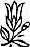

Sevgili Bhagwan,
Roma Katolik Kilisesinin cinayet, terörizm, zimmete para geçirmek, uyuşturucu akışı ve inanılmaz miktarlarda büyük ve süregiden dolandırıcılıktaki rolünü, Amerika, İtalya, Güney Amerika, Polonya'daki politik yönlendirmelerini ortaya seren bir kitap okudum... bu liste Nazareth'li marangozun mesajından uzak olduğu kadar etkileyici de.
Lütfen yorum yapar mısınız?
Bu kitap Katolik kilisesindeki katil içgüdüyü anlamaya büyük bir katkıda bulunmuş. Aynısının her din için yapılması gerek, çünkü hepsi de az ya da çok ayın şeyi yapıyorlar. Belki Katolik kilisesi en iyi örnek, çünkü o dünyadaki en organize ve sayıca en fazla izdeşi olan din -yediyüz milyon kişi Katolik.
Bu din hayal edebileceğiniz her suçu işledi. Binlerce kadını cadı olarak etiketleyerek canlı canlı yaktı. Hiçbir yerde şeytan yok, sadece her yerde cadı vardır, bu kadınlar yok edilmek için seçildi, çünkü Katolik kilisesinin rakipleriydiler. Dünyanın putperest (pagan) olduğu günlerin daha eski ve daha kadim geleneğini taşıyorlardı. Doğaya tapıyorlardı ve Katoliklik için bu en kötü suçtur -çünkü bu tanrıya ihtiyaç olmadığı, doğanın yeterli olduğu anlamına gelir. Bir kurtarıcı olarak İsa'ya gerek yoktur, çünkü kimse boğulmuyordur. Ve Katolik rahiplere ve günah çıkartma hücrelerine de gerek yoktur -çünkü doğa günah diye bir şey bilmiyordur.
Bu kadınlar putperest oldukları için canlı canlı yakıldılar. Fakat sırf putperest oldukları için onları yakmak yeterli bir bahane değildi; öyle bir şekilde kınanmalıydılar ki canlı canlı yakılmaları mantıksal olarak desteklenebilsin. Önce günlerce işkence gördüler -onlara işkence etmek için özel aletler geliştirildi- bir iki hafta yemek vermeden, uyutulmadan, dövülerek sürekli işkence edildikten sonra kadınlar sonunda çaresizlik içinde itiraf ettiler, çünkü eğer itiraf etmezlerse işkence sürecekti. Bunun anlamı nedir? Kurtulamayacağınız...
Kilise çok güçlüydü; o sadece din değil, aynı zamanda hükümetti de. Dinin ve hükümetin tüm kudretine sahipti. Bu nedenle bu kadınlar ne isteniyorsa itiraf ettiler; itiraf zorlamaydı.
Kilisenin gücü duruyor, dünyevi kudreti yirmi kilometrekarelik Vatikan’la sınırlı olsa da. Fakat o hala bir krallık, bağımsız bir ulus ve papa bu devletin başı.
Şimdi Vatikan bankasının yöneticisi saklanıyor, çünkü İtalyan hükümeti onu tutuklama kararı çıkardı -suçları çok büyük bulundu- fakat Vatikan'a giremiyorlar. Orası bağımsız bir ülke.
Belki papa dünyadaki en büyük mafyayı yönetiyor ve papanın bankası da uyuşturucudan gelen paraları aklıyor -haftada milyonlarca doları- ve bankanın yöneticisi şimdi İtalyan hükümeti tarafından aranıyor, kefaletsiz tutuklama kararıyla ve polis Vatikan'ın etrafında onu bekliyor. Papa onu ödüllendirdi; o sadece bir piskopostu ve onu kardinal yaptı.
Papa dünya turlarında başka hiçbir papanın harcamadığı kadar para harcıyor. Daha bir kaç ay önce Avustralya gezisinde İngiltere Kraliçesinin gezisinde harcadığından daha çok harcadı. Hemen her yıl dünya turlarında dokuz milyon dolar harcıyor -ve tüm bu paralar eroinden ve uyuşturucudan geliyor. İnsanlığın bu kadar kör olması tuhaf. Bütün bu insanlar güzel sözler söyleyip duruyor; uyuşturucuya karşılar ve tüm imparatorlukları uyuşturucuya dayanıyor! Kendilerinin yaptığı her şeyi kınıyorlar. Homoseksüelliği kınıyorlar ve Katolik rahiplerin neredeyse yarısı homoseksüel. Bu çok ılımlı bir tahmin; yüzdenin bundan fazla olduğu tahmin ediliyor. Ya manastırdaki keşişlere ne denir -bu Polack'tan önceki papa homoseksüeldi. Papa olmadan önce Milano'da kardinaldi ve bir erkek arkadaşı vardı ve bu halkın diline düşmüştü. Sonra papa oldu ve yaptığı ilk şey erkek arkadaşını sekreteri olarak atamaktı. Tüm dünya onun homoseksüel olduğunu biliyordu -ve Katolik kilisesi homoseksüelliğe karşı ve kilisenin başı kendisi homoseksüel. Bu kesin sahtekârlık, samimiyetsizlik.
Milyonlarca insan haçlı seferlerinde, din savaşlarında, cihatlarda tanrı ve din adına öldürüldü. Bu kitap Roma Katolik Kilisesinin cinayet, terörizm, zimmete para geçirmek, uyuşturucu akışı ve inanılmaz miktarlarda büyük ve süregiden dolandırıcılıktaki rolünü, Amerika, İtalya, Güney Amerika, Polonya'daki politik yönlendirmelerini ortaya seren çok yardımcı bir kitap...
Daha birkaç gün önce papa kilisenin hiçbir tür politikaya karışmaması gerektiğini, Hıristiyan rahiplerin, piskoposların, kardinallerin politikadan uzak durması gerektiğini açıkladı. Ve bunları söylerken komünizme karşı savaşması için Polonya'da bir partiye milyonlarca dolar gönderiyordu -hemen hemen bir milyar dolar gönderdiği sanılıyor. Bu insanların o kadar çok yüzü var ki. Eğer politikayla ilgilenmeyecekseniz Polonya'da komünist partinin hükümette kalmamasıyla neden ilgileniyorsunuz ki? Ve bunun için bir milyar doları nereden buldunuz? Uyuşturuculardan...
Fakat bu yeni bir şey değil. Bu İsa'nın çarmıha gerilmesinden beri süregeliyor. Eğer bu zavallı marangozun oğlu öğretilerinin sonuçlarının bu olacağını bilseydi Yahudilerin onu öldürmesine gerek kalmazdı, o kendini öldürürdü.
Bu kitabın Katolik kilisesine yaptıkları tüm dinlere yapılmalı -onların çalışması derinden incelenmeli- ve onların da katoliklerden daha az suç işlemediğini göreceksiniz.
Budistlere ne oldu? Buda Hindistan'da doğdu. O kadar müthiş bir etkisi oldu ki tüm ülke etkisi altına girdi; milyonlarca insan Budist oldu. Ve öldüğü zaman bu milyonlarca insana ne oldu? Öldürüldüler, canlı canlı yakıldılar, ülkeden atıldılar.
Asya'nın bütünü Budisttir -çünkü Hindistan'dan kaçan bu insanlar canlarını kurtarmak için Çin'e, Kore'ye, Vietnam'a, Tayland'a, Burma'ya, Japonya'ya, Sri Lanka’ya ulaştılar; tüm uzak doğuyu kapladılar. Hindistan dışında tüm uzak doğu Budisttir ve Hindistan'da yirmibeş asırdır tek bir Budist olmadı.
Böylesine müthiş bir hareket sadece buharlaşıp uçamaz.
Fakat bu Brahmanizme, Hinduizme karşı olduğu için Hindular bunu hoş göremediler, brahmanlar bunu hoş göremediler. Bu onların tüm mesleğini yıkıyordu -çünkü brahmanlar insanların üstünde asalak gibi yaşıyorlardı; dini ayinler dışında hiçbir şey yapmıyorlardı.
Buda tüm dini ayinlere karşıydı. Saçmalık dolu olan Veda'lara karşıydı. O yaşarken Hindular sessiz kaldılar, çünkü onu yenecek delilleri yoktu; söyledikleri o kadar açık ve doğruydu ki, ona karşı koymak mümkün değildi. Fakat öldüğü zaman Budistlere karşı müthiş bir kıyım başlatıldı.
Jainistlere karşı da aynısı oldu. Fakat kimse bir şey söyleyemez, çünkü hükümet hemen kimsenin dini duygularını incitmemeniz gerektiğini söyleyerek müdahale eder.
Bu garip. İnsanlar öldürülebilir ve bu konuda bir şey söylememelisin. Bu nedenle Hindistan'da bununla kıyaslanacak bir kitap yok -çünkü hükümet oylara bakar ve bu ülkede çoğunluk Hindudur.
Hiç kimse Müslümanların iktidardayken Hindulara ne yaptığını yazmadı -ne kadar güzel tapınaklar yıkıldı, asırların çalışmasını temsil eden ne kadar sanat eseri, heykel, tapınak yıkıldı, ne kadar kadına tecavüz edildi, ne kadar insanı ya müslüman olmaya ya da ölmeye ittikleri yazılmadı.
Hindistan'daki bütün Müslümanlar Arabistan'dan gelmedi; onlar din değiştirdiler ve kılıcın ucunda din değiştirdiler, ikna olarak değil, Müslümanlığın kendi dinlerinden daha iyi olduğu ispatlandığından değil, Müslümanlar kılıcı tek argüman olarak kullandılar -fakat neredeyse onbeş asırdır süren cinayet ve ırza geçmeler hakkında tek kitap yok.
Her dinin içine bakılmalı, derinleri araştırılmalı ve kamuoyu bu dinlerin insanlığa neler yaptığını öğrenmeli. Onların dini duygularının incineceğine dair bu saçmalık dikkate alınmamalı, insana karşı suç işlemeye devam edin ve bu söylendiği zaman dini duygularınız incinsin...
Bunların merhametsizce teşhir edilmesinin zamanı geldi, çünkü bu benim isyanımın başlangıcı için, bu çirkin kurumlara karşı büyük bir isyanın başlangıcı için zemin hazırlayacak ve tüm insanlığı sevgi dolu bir ilişki içine sokacak -ulus olmadan, din olmadan, derin bir dindarlıkla ve yaşama karşı büyük bir saygı ve varoluş için büyük bir minnettarlıkla.
Tüm gereken geniş bir isyankârlık, özellikle genç nesilde, çünkü gelecekte onlar yaşayacak. Geçmiş tekrarlanmamalı.
The Rebel,
13. Toplantı
7 Haziran 1987